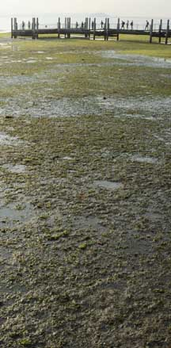
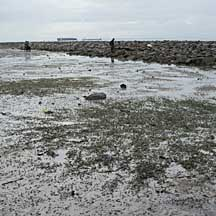
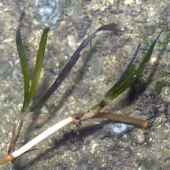
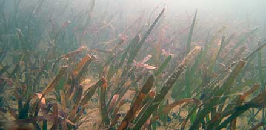
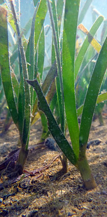
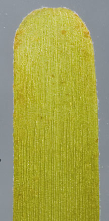
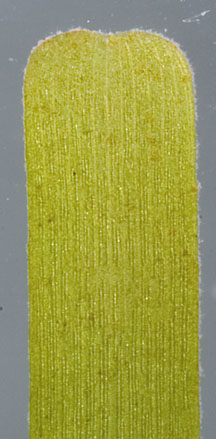

|
|
|
seagrasses
text index | photo
index
|
| Seagrasses > Family Cymodoceaceae |
| Smooth
ribbon seagrass Cymodocea rotundata Family Cymodoceaceae updated Mar 14
Where seen? There is a small patch of this seagrass on Chek Jawa and they have also been seen on Cyrene Reef. Smooth ribbon seagrass is found throughout tropical Indo-West Pacific usually in clear water reefs, growing where it is exposed for only a short time during low spring tide. It is fast growing and believed to play a role in habitat recovery. It is not as well studied as Serrated ribbon seagrass (Cymodocea serrulata). Features: Long ribbon-like leaves (0.5-1cm wide and 7-15cm long), with blunt, rounded tips that are smooth and not serrated. There are continuous leaf scars around the upright stem. It has thick rhizomes (underground stems). At intervals along the rhizome, a short stem emerges with 2-7 long leaves. The young leaves are fully enclosed by a leaf sheath which is sometimes dark coloured. The leaf sheaths around the leaf are not obviously flattened. Sometimes confused with other ribbon-like seagrasses. Here's more on how to tell apart ribbon-like seagrasses. Flowers and fruits: This seagrass has separate male and female plants. Flowering is rarely observed. The female flower appears in pairs at the base of the leaves. They have a prong-like stigma. The male flowers form within the leaf sheath. Seeds (10mm)are dark coloured with a hard-coated, beaked nut with a spikey central ridge along the length. The seeds are attached to the rhizome. Role in the habitat: Dugongs eat this seagrass where smaller Halophila and Halodule are not available. Status and threats: It is listed as 'Critically Endangered' on the Red List of threatened plants of Singapore. |
 This seagrass grows quite near the Chek Jawa boardwalk. Chek Jawa, Jun 09  Patches growing on an artificial beach Tanah Merah, Jun 10 |
 Thick rhizomes with 2-7 leaves. Chek Jawa, Nov 06 |
 After the oil spill in May 10. Tanah Merah, Jun 10 |
|
|
 Tanah Merah, Jun 10 |
 Tanah Merah, Sep 11 |
 Tanah Merah, Sep 11 |
| Smooth ribbon seagrasses on Singapore shores |
| Photos of Smooth ribbon seagrasses for free download from wildsingapore flickr |
| Distribution in Singapore on this wildsingapore flickr map |
Links
|
|
|
|
You CAN make a difference for Singapore's seagrasses!  |